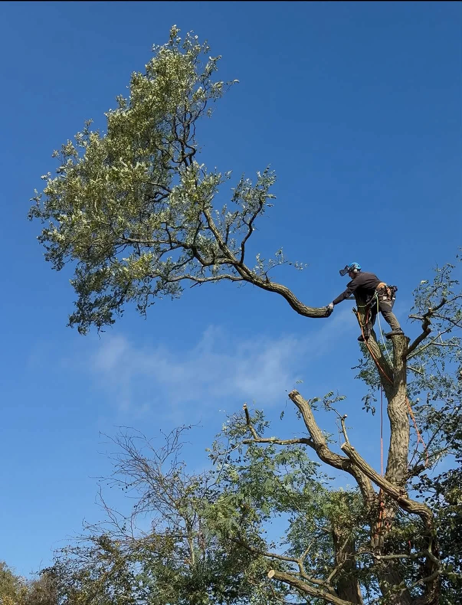

JLH TREE & HEDGE SERVICES · DRAYCOTT
From the first cut
to the final shape.
Tree surgery, removals, pruning and hedge work from our project collection.
OUR PROJECTS
Our project collection.
Select a photograph to view the complete image.
BEFORE & AFTER
A clearer space.
A different outlook.
The same garden before and after tree removal beside the playhouse. The stump remains visible in the completed photograph.
BEFORE & AFTER
A lighter canopy.
A clearer boundary.
Compare the street-side trees before and after reduction work at the same property.
FREE, NO-OBLIGATION QUOTE
Let’s talk about your tree or hedge project.
Tell us what you have in mind. This form opens a WhatsApp draft with all your details, ready for you to review, add photos and send.